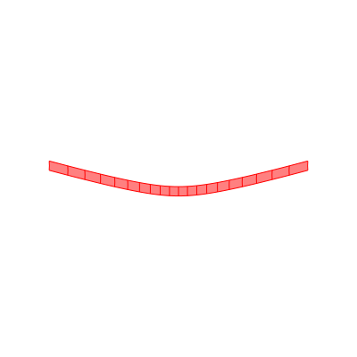
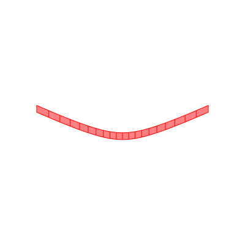
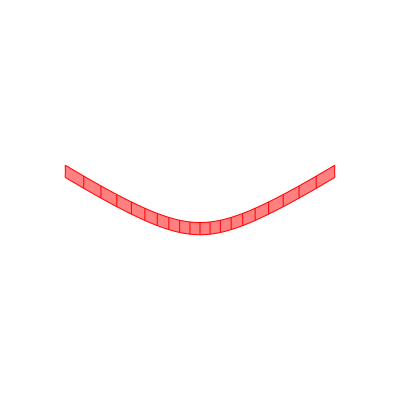
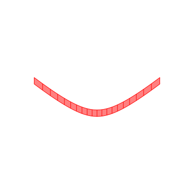
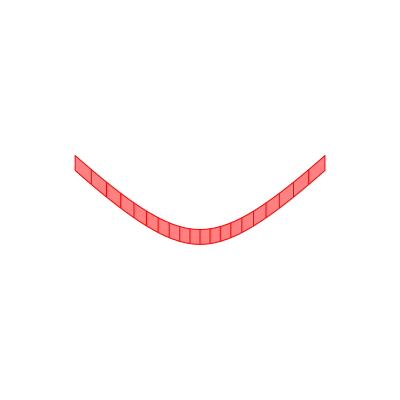
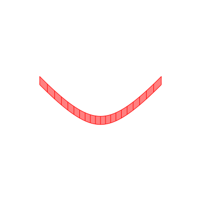
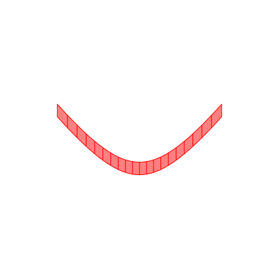
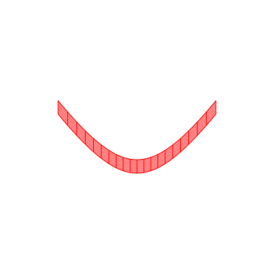
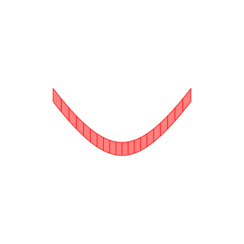

Paraboloid


Weaving a simple curved surface with positive curvature.

Load packages
using IntervalSets
using BasicBSpline
using StaticArrays
using ElasticSurfaceEmbeddingDefine the shape of the surface
ElasticSurfaceEmbedding.ùíë‚Çç‚ÇÄ‚Çé(u¬π,u¬≤) = SVector(u¬π, u¬≤, u¬π^2+u¬≤^2)
n = 10
D(i,n) = (-1.0..1.0, (i-1)/n..i/n)D (generic function with 1 method)Compute the shape of the embeddings
steptree = ElasticSurfaceEmbedding.StepTree()
for i in 1:10
initial_state!(steptree, D(i,n), n₁=33)
newton_onestep!(steptree, fixingmethod=:fix3points)
newton_onestep!(steptree)
newton_onestep!(steptree)
newton_onestep!(steptree)
newton_onestep!(steptree)
refinement!(steptree, p₊=(0,1), k₊=(EmptyKnotVector(), KnotVector([i/n-1/2n])))
newton_onestep!(steptree)
newton_onestep!(steptree)
pin!(steptree)
endExport the shapes in SVG format
export_pinned_steps("paraboloid", steptree, xlims=(-2,2), ylims=(-2,2), unitlength=(100,"mm"), mesh=(20,1))10-element Vector{String}:
"paraboloid/pinned/pinned-9.svg"
"paraboloid/pinned/pinned-18.svg"
"paraboloid/pinned/pinned-27.svg"
"paraboloid/pinned/pinned-36.svg"
"paraboloid/pinned/pinned-45.svg"
"paraboloid/pinned/pinned-54.svg"
"paraboloid/pinned/pinned-63.svg"
"paraboloid/pinned/pinned-72.svg"
"paraboloid/pinned/pinned-81.svg"
"paraboloid/pinned/pinned-90.svg"        
This page was generated using DemoCards.jl and Literate.jl.